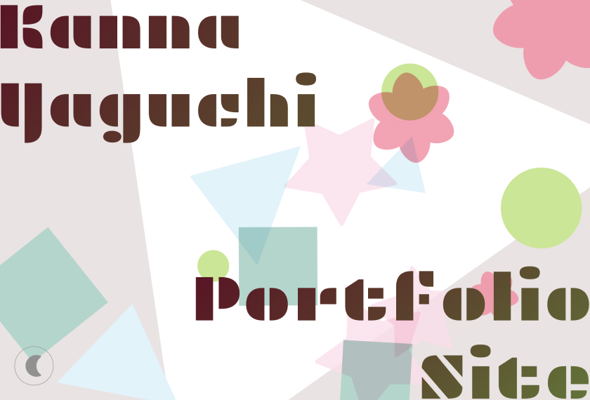
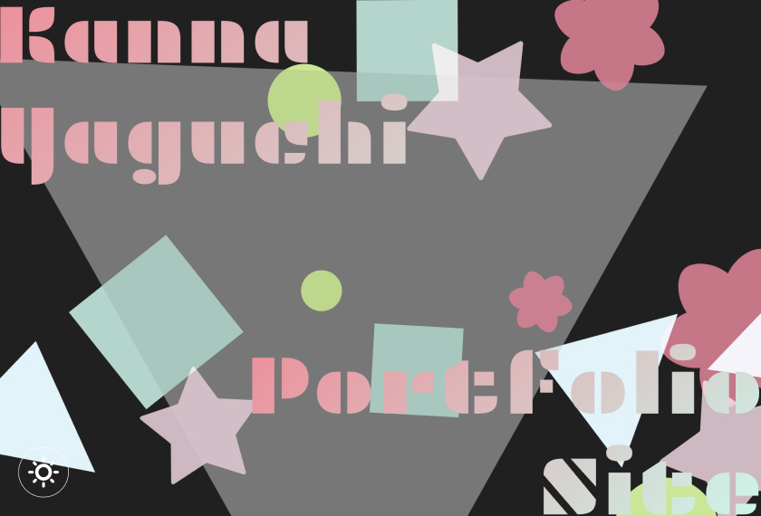
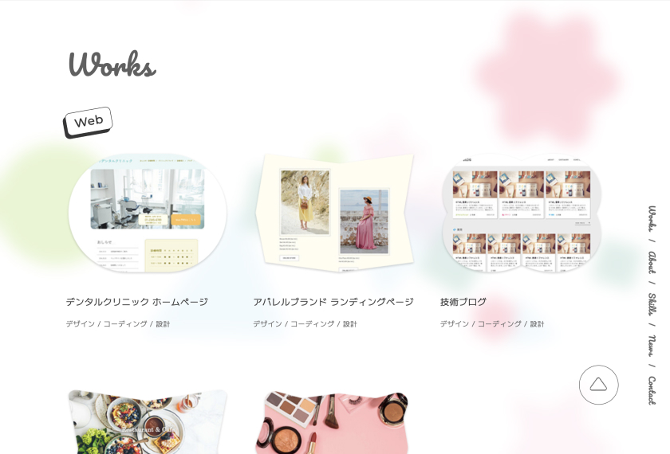
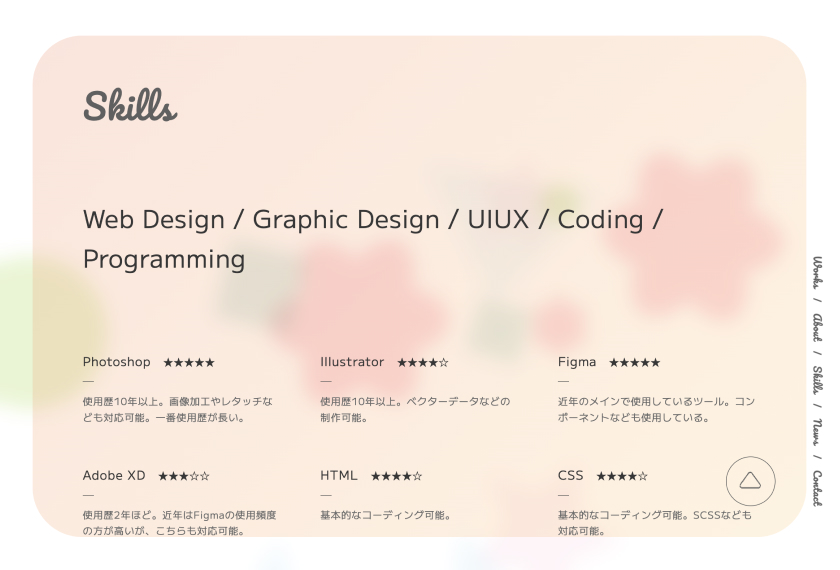

以前の公開から約1年半、さらに新しくポートフォリオサイトを見直し、制作し直して、大幅リニューアル&公開いたしました！
リニューアルした理由・目的は、この1年半でさらなるデザイン、コーディング技術のスキルアップをすることができ、今の私だからこそ表現したいWebサイトがある！ならば制作したい！と考えたことからでした。
以前も背景グラデーションなど新たな表現を試みましたが、それだけじゃ物足りない…
今の私だからこそ思うデザインへの思いと、自分が制作したデザインが社会に与える影響、
今後の夢や目標を、ポートフォリオサイトを通じて表現できたら、という気持ちが強く湧き、
今回企画や構成からデザイン、コーディングまで、これまで以上に綿密にアイデアを練りながら、細部までこだわって制作することができました。楽しかった…！
テーマは『万華鏡』
のぞいて見てみると色とりどりに変化する万華鏡をイメージし、
ただわかりやすい・使いやすいだけではない、遊び心や楽しさとしてのデザイン。
奥行きや多角的な視点から生まれる、デザイン・それにともなう未来への可能性。
そんな意志や思いをこめたポートフォリオサイトになっています。
また、メインビジュアルやその他項目の背景を漂う図形たちは、
大学の卒業制作で制作した「子どもたちのためのデジタルインスタレーション」、それらのモチーフとして使用した図形をオマージュしております。
当時から月日が経ち、様々な制作を経験した今の私が「楽しさのデザイン」を表現するならどうするか、という視点もデザインに取り入れたかったため、あわせてご覧いただけるとまた新鮮かもしれません。
今回リニューアルした点はこちら。
【メインビジュアル(ファーストビュー)に動く図形のアニメーションを実装】
万華鏡をイメージし、背景に大きな三角形を回転させ、手前に色とりどりな図形を漂わせました。
卒業制作でも使用した図形をモチーフにしたデザインでしたが、当時は子ども向けに色とりどりなカラーリングを意識していたことに対して、
今回のポートフォリオサイトでは、私の生まれた季節でもあり、好きな季節でもある「春」をテーマに、花のピンク(赤)・草木の緑・空の水色を基調としたカラーリングで、
丸、四角、三角、花、星といった図形を散りばめました。
また、赤・緑・青は光の三原色の意味合いも兼ね、色とりどりに変わる光という意味も込めています。
(メインビジュアル左下のボタンからダークモードとライトモードに変更できるので試してみてください。)

【Works以降の背景にも動く図形】
サイトを閲覧しながら、ずっと背景で浮遊する図形たちを見ることができます。
すりガラス風のレイヤーを1枚挟んでいるので、コンテンツの閲覧も視覚的に邪魔しない程度になっています。

【作品の追加】
以前はWebデザインとバナーデザインのみでしたが、新たにアプリデザインと卒業制作のデジタルインスタレーションの項目も追加。
新しい領域にも挑戦しております。
(作品は今後も追加予定です。)
【About以降の背景がグラデーションに変わる】
以前のリニューアルでもグラデーションを背景にしましたが、今回は図形の浮遊アニメーションの上にグラデーションを敷くことでパワーアップ！色のバリエーションも春らしいカラーリングに。
【Skillsの内容を一新】
新たなツールの追加に加え、制作におけるモットーやポリシーを追加。
以前よりも、どんな制作をする人なのか？どんな思いで制作しているのか？といった人となりが伝わりやすくなるようにいたしました。

【コーディング全体を見直し】
サイト全体のコーディングは以前の構成などを踏襲しつつ、モダンで管理のしやすいコードに書き直し。
(難しいアニメーションなどの記述は、少しAIに質問しながら実装を進めましたが、基本的なHTMLやCSSの構築は自力です！)
——————————————
今回の制作は、今までとは違い、「デザインで見てくれる方に喜んでもらいたい」という思いを全面に出して制作することができました。
これまでデザインする際は、自分の意思をデザインに取り入れることを、少し遠慮していた部分があったんです。デザインとは、人の課題を解決するものであって、自分の意思は関係ないと昔は思ってきました。
たしかにデザインの根本は「課題を解決するもの」であることは変わりありませんが、
その中に少しでも、「楽しんでもらえるもの」「喜んでもらえるもの」を入れることができたら、それはきっと素晴らしい体験になるのではないかと、今の私は考えております。
そんな思いを取り入れたデザインを、今回は制作してみました。どうでしょうか？楽しんでいただけましたか？
これからもますます「楽しい・おもしろい・素敵なもの」を制作するためがんばります！
熱く語ってしまいました。それでは！
Yaguchi